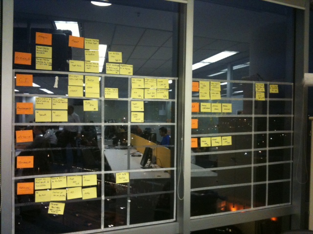

- Automação
+- Puppet
+- Padronizacao
- C.I.
- Provisionamento
- Metricas
- Monitoracao
+- Alerting
+- Graphing
- Projetos
+- AAPG/AbrilID
+- VejaSP
+- IBA
+- Hardening
+- SocialCore
Automacao
=========
1.1 Padronizacao
Done: Mapear/Criar novo template de servidor.
Wip: Aplicar consideracoes de Hardening no servidor padrao.
ToDo: Revisar/Validar nomenclatura dos servidores.
ToDo: Revisar/Validar estrutura dos diretorios de servidor.
Automacao
=========
1.2 Puppet
Done: Fazer apresentação do Puppet: dev.
Done: Fazer apresentação do Puppet: ops.
Wip: Criar manifestos globais.
Wip: Ambiente de treinamento: VAGRANT *
ToDo: Criar servidor puppet-master.
ToDo: Definir controle de versão dos manifestos.
ToDo: Automatizar testes dos Manifestos.
ToDo: Documentar arquitetura da solução Puppet.
ToDo: Fazer treinamento de Puppet: dev. * !!!
ToDo: Fazer treinamento de Puppet: ops. * !!!
Para entregar um ambiente novo AAPG/AbrilID precisamos automatizar.
Para automatizar usando Puppet precisamos fechar entre os nossos vários "padroes".
Para padronizar um servidor escolhemos a opcao que seja reproduzível: via kickstart.
Para padronizar um servidor escolhemos a opcao que seja reproduzível: via kickstart.
Ao final, um débito técnico do ambiente nos impulsionou a abordar itens sobre "padrões" e "provisionamento".
CI
==
Done: Spike de instalacao do Jenkins
Done: Configurar build constante no Jenkins
Done: CI ACIA
Done: CI SocialCore
Done: Jenkins para deploy de artefatos
Done: Servidor v-infra-ci01
Wip: Configurar segurança no JENKINS
ToDo: CI: Revisar AbrilID
ToDo: CI: Revisar AAPG
ToDo: CI: Revisar VejaSP
Provisionamento
===============
Done: Template Kickstart
Done: Servidor Linux MINIMAL
Wip: Definir procedimento para pacotes RPM
ToDo: POC: Spacewalk
ToDo: POC: Cobbler
Metricas
========
ToDo: Definir metricas de interesse do aplicativo.
ToDo: Definir arquivos de coleta.
ToDo: Definir ferramenta de coleta.
(snmp,collectd,statsd)
Monitoracao
===========
Alerting
ToDo: Revisar ferrametas: Nagios/Zabbix/Zenoss
ToDo: Revisar coleta
Graphing
ToDo: Definir ferramentas de apresentacao: Cacti,Munin,Graphite
BackLog
=======
ToDo: POC: OpenStack
ToDo: POC: Front-end para consulta de logs no servidor (log.io)
ToDo: Definir processo de atualizacao de template de servidor.
ToDo: Definir processo de atualizacao de manifestos.
ToDo: RPM: php 5.3.8
ToDo: CI: B.I.
ToDo: CI: Billing
ToDo: CI: Exame
ToDo: Servidor: fileserver Abril Midia.
Projetos
========
AAPG/AbrilID
------------
Done: US2161 Atualizar documentaçao ops AbrilID/AAPG
Wip: US2162 Empacotar template máquina QA no Vagrant
Wip: US2162 Manifesto AbrilID
ToDo: US2164: Definir/Revisar conjunto de ambientes: dev/qa/stage/prod
ToDo: Rever deploy AAPG
ToDo: Rever deploy AbrilID
ToDo: Integrar deploys no CI
Projetos
========
VejaSP
------
ToDo: Definir deploy *
ToDo: Integrar deploys no CI *
Projetos
========
IBA
---
ToDo: Fornecer capistrano-abril
Wip: Definir uso do Jenkins/Go
Done: fornecer Kickstart
Projetos
========
Hardening
---------
ToDo: Colocar vmx no Datacenter
ToDo: hardening como modulo Puppet
ToDo: usuarios infra como modulo Puppet
Tarefas
=======
- Executar o treinamento da equipe em Puppet
- Mostrar as modalidades de controlar configuração.
- Mão na massa...... !!
- Fazer nosso checkpoint no quadro de "DevOps"
Fazer nosso checkpoint no quadro de "DevOps !!!"
/
#
Tarefas